October 2026
What is Persistent Homology?
If persistent homology (PH) is the data analyst’s gateway drug to topological data analysis (TDA), then TDA is the gateway drug to algebraic topology. And I do mean drug, because algebraic topology can be transcendent, mind-bending, and somehow highly addictive. It can also leave you staring hopelessly at the ceiling, hoping your head will stop spinning, so be careful how much you take, and pace yourself.
For anyone wanting to go on a trip, check out my point cloud extravaganza, what-the-ph, with real data projected into 3D, distance metrics, and analysis methods.
TDA can be a useful approach when you have particularly noisy or high-dimensional data, and you want to know what kind of shape-invariant features it might have. The main idea is looking for features that are preserved under continuous deformation, usually expressed as without puncturing, tearing, or gluing. In other words, you may not make new holes, you may not destroy the ones already there, and you may not stick separate components together. Persistent homology is the computational mechanism by which you calculate the shape across every scale in a continuous sweep, and then consider the lifetimes of the shape’s features. This is usually expressed in a barcode graph or a persistence diagram.
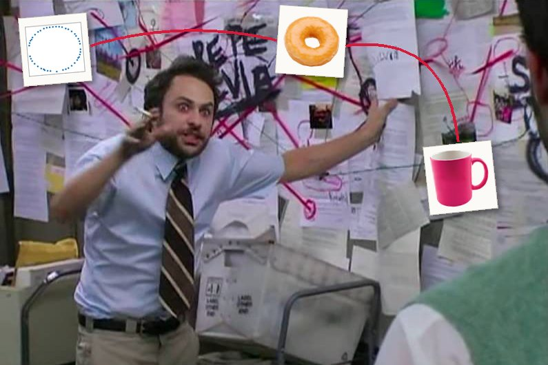
The Memes
If people encounter topology at all, they usually do for the first time through some variation of these memes:
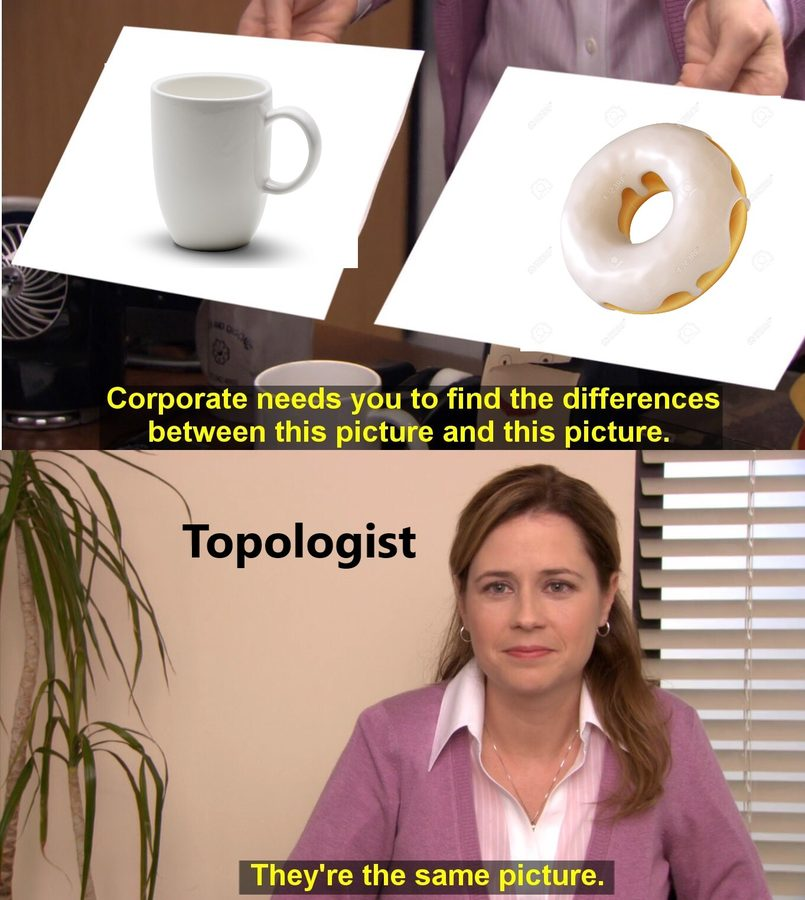
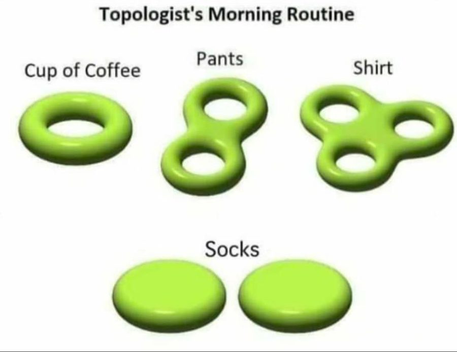
These are popular because they take things that are completely familiar and abstract them to the point of absurdity. The shape of these objects is obvious. We all know what a coffee cup and a donut look like, and to equate one with the other is almost offensive. (Also, notice that the pair of pants is drawn here as a surface with two holes, which, squashed flat, is a figure eight. We’ll come back to this later.)
However, in the joke lies the most important aspect of topology. The reason these memes are so funny and easy to comprehend is that the viewer has already implicitly done the topology. They looked at the abstractions, compared them with their own understanding of the real-life thing, and immediately understood the most salient features of each object. Topology explicitly tells us something that no other area of mathematics can tell us about a shape: the number of connected components, and the presence of holes.
A hole is a bit of a strange thing to be concerned with, because it’s the one feature that is defined by an absence. There is even an ongoing argument in ontology about whether holes even exist, but that is beside the point. In applied topology, we say that the holes exist, and we’ll be damned if we can’t find them.
Below are twenty-four points in two-dimensional space. Immediately, you can notice something special about how they are arranged.
Taking an average (or computing a centroid) lands in the one place where there is no data at all. A trend line splits the points in half, seemingly arbitrarily. Means, variances, and regressions can tell you where the data is geometrically, but none of these methods has the power to indicate that there is a hole in the middle. Indicating holes requires understanding shape, and that requires topological methods.
A hole is where something passes through
Consider the following objects: a coffee mug, a donut, a single penne noodle, a train tunnel, a closed padlock, and a hair tie.
This strange assortment of objects, much like the donut and coffee mug of our morning routine meme, is topologically equivalent. Why?
They were designed specifically so that something could go through them. Oil goes through the donut so it doesn’t turn soggy. Your fingers pass through the handle of a mug. Boiling water rolls through penne. There is a shared function preventing the distribution of material at the center of these objects. The hole, in this way, indicates passage. If you really think about it, the human culinary tradition has optimized donuts and penne (and many other delicious things!) into tori because of their need to be cooked evenly.
This all sounds a little silly when the objects are as simple as a torus. But real-world data is high-dimensional and abstract, and often a lot more topologically complex. Sometimes, we don’t even know the shape of the data to begin with.
Why you should care about holes
Holes are awesome. We can also call them by a more dignified and mathematical name, which is cycles. A cycle is a path that goes somewhere and comes back without repeating itself. No point on a cycle is the beginning or the end, which is what distinguishes it from a line (in homology terms, a cycle has no boundary).
Cycles are everywhere in the natural world. They appear in physical objects like anatomical structures, but they can also represent phenomena that recur or are periodic.
For example, life cycle diagrams abstract the inherently spatio-temporal process of birth-growth-reproduction-death into a graph structure (morbid!). This figure from the Glass Flowers exhibit at the Harvard Museum of Natural History shows the life cycle of Marchantia polymorpha, the umbrella liverwort, which can reproduce in two different ways.
Male and female Marchantia polymorpha are genetically distinct and undergo divergent reproductive processes. This is shown at the fork at the spore stage.
What this diagram simplifies is that both male and female marchantia can reproduce vegetatively (clone themselves, basically). On the bottom leaves of the plant, there are little cup structures called gemma cups. When it rains, the water splashes out gemmae, which eventually grow into a genetic copy of the parent. A male gemma makes another male plant and vice versa.
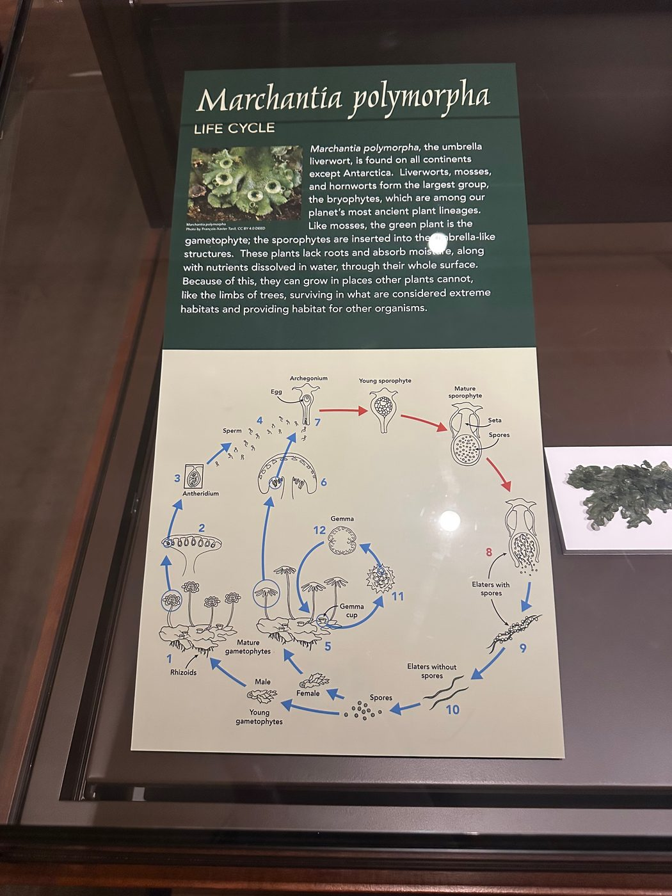
If we were to draw both the male and female cycles and their vegetative variants, with roughly one node per stage of development and one edge per possible transition, we would have eight stages and eleven transitions, looping back around to the primitive egg stage. The number of independent cycles is:
We would have four loops: one female marchantia loop, one male marchantia loop, and two small vegetative cloning loops, one for each sex. This count is called the first Betti number (β1), and we’ll talk about it more later. What’s important to know now is that it counts the independent cycles in the object.
Of course, the loops are partly a product of the graphical abstraction, because the choice of representation always matters. No organism literally turns back into an egg. But given our chosen representation, the realness comes from what is not happening in the life cycle of the marchantia. It is biologically impossible for a marchantia to directly transform from one non-adjacent stage to another. For example, an archegonium cannot become spores without first transforming through intermediate stages. Nor can a stage in the vegetative cycle jump straight into the sexual cycle. It’s right there in the name for us: life cycle.
Structure, plainly, is what happens around what doesn’t happen.
When the shape of the data is unknown
Even when you suspect there’s a shape in your data, you usually can’t see it immediately.
Real-world data can only ever represent observations. Data collection can be slow and imperfect, and we never seem to be able to satisfy our need for it. Predicting unobserved cases is a very familiar problem if you know some elementary probability theory. When you assume your measurements are drawn from a Gaussian (i.e., they center around a mean and have predictable proportions relative to the standard deviation), you are smoothing out your distribution to make room for the data you did not see. A very strange observation is very unlikely, but it often isn’t impossible, and the tail end of the curve allocates a little room for it.
Geometry follows the same intuition via the manifold hypothesis. The manifold hypothesis says that high-dimensional data generally occupies a much lower-dimensional space (the intrinsic dimension) than the one it’s sitting in (the ambient dimension). Like the sidewalk or your kitchen floor can be flat when the Earth is round, a manifold looks flat and low-dimensional up close, even when it curves through a much higher-dimensional space. So in this analogy, your points are samples from a manifold, and along the manifold you can interpolate to points that were never observed.
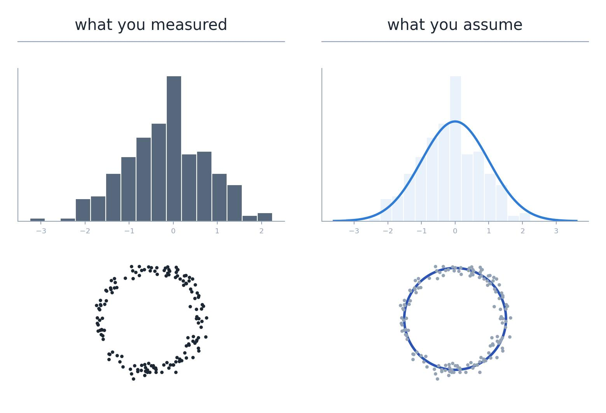
In the image above, we assume that our points are samples from an underlying cyclical structure, because our existing observations seem to suggest so. If we were to observe a few points in the middle, we might consider them to be noise.
This is a very satisfying idea in theory, because our example data is still pretty simple. In two or three dimensions, we can easily visualize where the generalization should end. With real data, often at minimum a few hundred dimensions (and thousands for large model hidden states), there’s no easy way of telling which scale best describes it, or how far from your observations you can generalize.
Because PH performs a continuous sweep, it frees you from choosing a scale. What it doesn’t free you from is the burden of interpreting your data, or of forming a hypothesis about what kind of structure to look for in the first place.
The main idea of persistent homology
We don’t know which is the correct scale to consider our data from, so we will just consider all of them at once.
To compute persistent homology, grow an n-dimensional sphere around every point from zero to infinity. At zero, the points are infinitely tiny and infinitely separate. At infinity, there is just one singular, all-encompassing blob, which is equally uninformative. In between, at some distance ε, that network of spheres best approximates the manifold underneath. (Two points count as connected once they’re within ε of each other, so each sphere really has radius ε/2.)
This sweep from zero to infinity is called a filtration. During the filtration, you record ε at the moment a feature appears (its birth) and the moment it disappears by merging with another feature (its death). Cycles are born when a ring of spheres meets, and die when the hole in the middle fills in. The time between a feature’s birth and death is called its persistence.
In practice, this is usually done as a Vietoris–Rips filtration, which builds a simplicial complex over the points. When two spheres overlap, draw an edge between their centers. When three overlap pairwise, fill in the triangle between them. A hole is a ring of edges with no triangles filling it. Remember the β1 count of the marchantia graph, with eight nodes and eleven edges? This is essentially the same thing.
The output of a filtration is a persistence diagram, which can also be shown as a barcode. Each bar (or dot) is a topological feature, and its length on the barcode (or height above the diagonal) is how long that feature survived during the filtration. Together they form a distribution of birth/death pairs that characterizes the shape of the point cloud across every possible scale.
Connected components are counted by H0 and loops are counted by H1. The number of Hn features alive at any moment is that shape’s n-th Betti number. A barcode shows the Betti numbers of the point cloud throughout the entire filtration.
To step back for a moment: homology is an algebraic way of counting holes in each dimension (H0 counts components, H1 loops, H2 voids, like the hollow inside a basketball). Plain homology counts them for one fixed shape, at one fixed scale. Persistent means tracking them across every scale. Persistent homology, then, is a calculation of the n-dimensional holes of an object at every scale from zero to infinity.
This is why PH is more powerful than plain theoretical topology. The filtration parameter encodes distance (with embeddings, usually cosine distance), so the barcode also encodes geometric information. Two clusters sitting very far apart in Euclidean space stay alive as distinct H0 features for much longer than two clusters that are close together. This is as much a feature of the Vietoris–Rips construction as it is of the design of the embedding space: similar points are close and dissimilar points far apart.
Persistent homology and noise
Which brings us back to pants and plants…
You may have seen this other version of the “topologist’s morning routine” meme. Notice the additional holes on the pants.
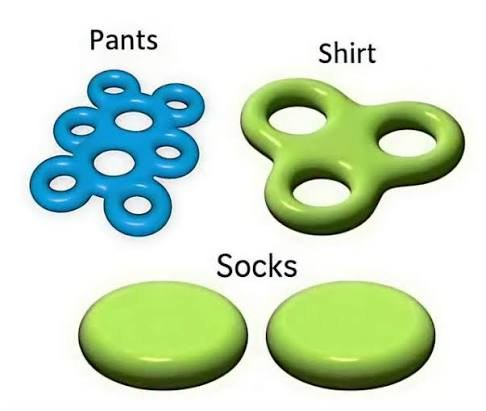
I think the extra six holes are meant to represent belt loops on jeans (judging by the color). But empirically speaking, I don’t really care about belt loops. I would never define a pair of pants as “two holes for legs and 6–8 belt loops”. Belt loops might come up very low on a list of the “defining features of pants” (if I ever had to write one for some reason). In this metaphor, belt loops are noise.
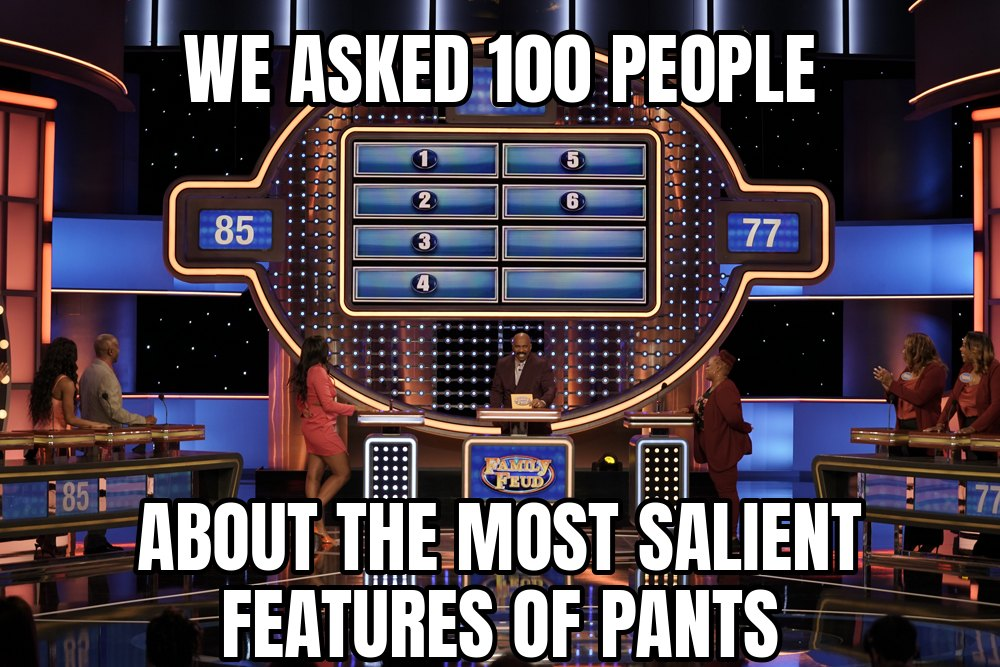
Much like the life cycle of the marchantia, where both male and female plants have a simple and equivalent vegetative reproductive cycle, this is noise at our level of abstraction. The artist of the diagram even intuitively knew this, collapsing the male-vegetative and female-vegetative cycles into one. Which means, strangely, that the marchantia life cycle is topologically equivalent to our early-bird topologist’s pair of pants. Two distinctive holes are the most important features of both.
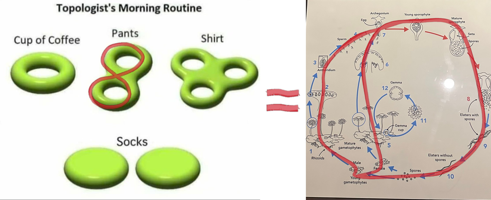
It’s true that everything has holes and everything has shape. Given any real point cloud, it is basically impossible that you will find zero cycles. What’s important in analyzing data is separating the features that are definitive or most salient from the relatively unimportant low-level details (or artifacts of a lossy embedding). On the barcode, the pant legs or the main male–female marchantia cycles appear as long bars, and the belt loops/vegetative cycles appear as short bars.
However, the belt loops/vegetative cycles are less noisy than, for example, a vaguely loop-like cluster on a life cycle, or maybe a loose thread attached at both ends of the denim. It really depends on what level of sensitivity your research requires, and what you are truly willing to write off as noise.
A PH superpower: the stability theorem
PH in H0 is definitionally fancy continuous clustering, and that’s usually the one-sentence explanation I give when asked about it. The persistence values of homology zero are equivalent to the sorted edge weights of the Euclidean minimum spanning tree (MST). The reason the output of PH is preferable to the MST (depending on the specifics of the application) is that persistence diagrams obey a stability theorem.
At a static threshold ε, even a small perturbation can severely affect the clustering behavior of an MST. Distinct clusters may merge, or a coherent cluster may split. However, taking the entire diagram guarantees the following:
In words, this says that the bottleneck distance between two persistence diagrams (PDs) is bounded by the distance between the underlying point clouds. The bottleneck distance asks: if you had to slide the dots of one diagram onto the dots of the other (and any leftover dots onto the diagonal), what’s the furthest any single dot has to travel, under the best possible matching? The Gromov–Hausdorff distance asks the same kind of question about the point clouds themselves: how different are they as shapes, ignoring where they sit or which way they face? This is Cohen-Steiner, Edelsbrunner and Harer’s bottleneck stability theorem (Stability of Persistence Diagrams, 2007), extended to point clouds and Vietoris–Rips filtrations by Chazal, de Silva and Oudot (Persistence Stability for Geometric Complexes, 2014). It’s an upper bound, so a little noise to the point cloud can only perturb the PD a little. (A lot of noise can perturb it a lot, but it doesn’t have to.) This holds across all dimensions, and it’s the mechanism by which you can compute a barcode from noisy data and still be able to trust the long bar.
A PH caveat: the curse of dimensionality
High-dimensional space is weird. As the number of dimensions grows, the distances between random points all bunch up around the same value. Every point ends up roughly equally far from every other point (Beyer et al., When Is “Nearest Neighbor” Meaningful?, 1999). In two dimensions, “near” and “far” can mean something. In hundreds or thousands of dimensions, everything is kind of medium-far.
For PH, this squashes the filtration. All the action happens in one narrow window of ε, where everything is born at about the same time and dies at about the same time. The gap between long bars and short bars, which is the whole point of the pants-and-plants argument, shrinks. The pant legs start to look like belt loops, not because they are belt loops, but because the space has squashed the scale.
It also takes some of the comfort out of the stability theorem. The theorem bounds how much the diagram moves by how far the points move. If every coordinate gets just a little noise σ, each point moves by about σ√D in total. In two dimensions that’s nothing. In 768 dimensions that’s about 28σ, so the guarantee gets weaker as D grows. Noise that’s tiny in every coordinate can be large overall.
On top of that, language model embeddings have their own quirks. They tend to be anisotropic, sitting in a narrow cone rather than spreading out evenly (Ethayarajh, How Contextual are Contextualized Word Representations?, 2019). And cosine similarity between them is often dominated by a handful of “rogue” dimensions (Timkey and van Schijndel, All Bark and No Bite, 2021). Both bend the distances that PH is built on.
Here are a few more things that may bite you when you use PH. Figuring out how to control for them is a huge part of the analytic process:
- Outliers. The stability theorem gives no protection here. It measures how far two point clouds are from each other by their most divergent point, so a single stray point counts as a huge change. One outlier can split off as its own long H0 bar, or sit inside a loop and kill it early. (The fix is to filter by density instead of raw distance; see Chazal, Cohen-Steiner and Mérigot, Geometric Inference for Probability Measures, 2011.)
- Sampling. If you don’t have enough points around a loop, it never closes, and you never see it. This is part of why PH works best when you already suspect there’s a cycle in the world you’re measuring: you know to sample all the way around it.
- Density. Vietoris–Rips uses one ε for everything. A loop in a crowded region and a loop in a sparse region close at different scales, so bar length partly reflects how dense the data is, not just how big the hole is.
- What you did to the data first. The metric (cosine or Euclidean), normalization, and especially dimensionality reduction all matter. And dimensionality reduction is a huge deal! Methods like t-SNE and UMAP are notoriously sensitive to their parameters, and can create or tear loops. PCA is deterministic, but it can flatten structure.
None of this means PH is untrustworthy. It means that a persistent feature is a claim, and like any claim it needs robust control conditions.
Show me the money! (i.e. potential use cases in ML)
In machine learning more generally, the point cloud is usually some embedding feature of a model: learned representations, hidden states, attention signatures. This data is high-dimensional, often noisy, and has no ground-truth geometry whatsoever. Unsupervised geometric and topological methods can be especially helpful when working with this kind of data.
The property that makes TDA especially attractive to CL/NLP researchers is that topology is coordinate-invariant. Persistence diagrams (with respect to a common dataset) computed on different models can be compared directly. This is an approach I’ve been leaning on more recently, inspired by Shimon Edelman’s Representation is Representation of Similarities (1998).
In general, PH is used either as a feature input or as a confirmatory method for structure we already know exists in the world. The latter follows neuroscience and biology, which have shown some really cool applications of PH recently.
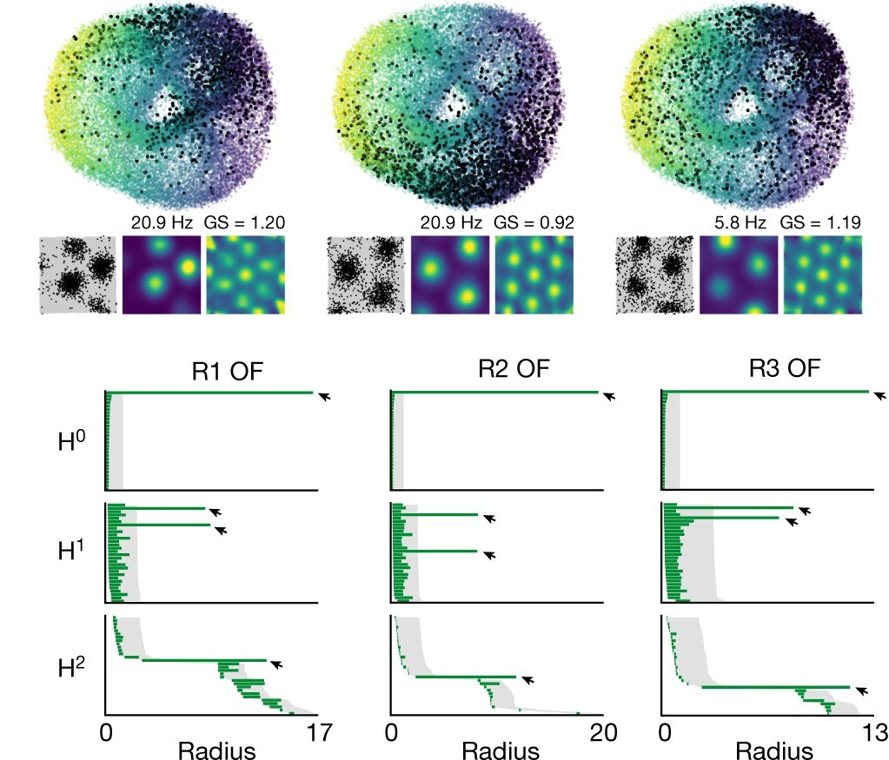
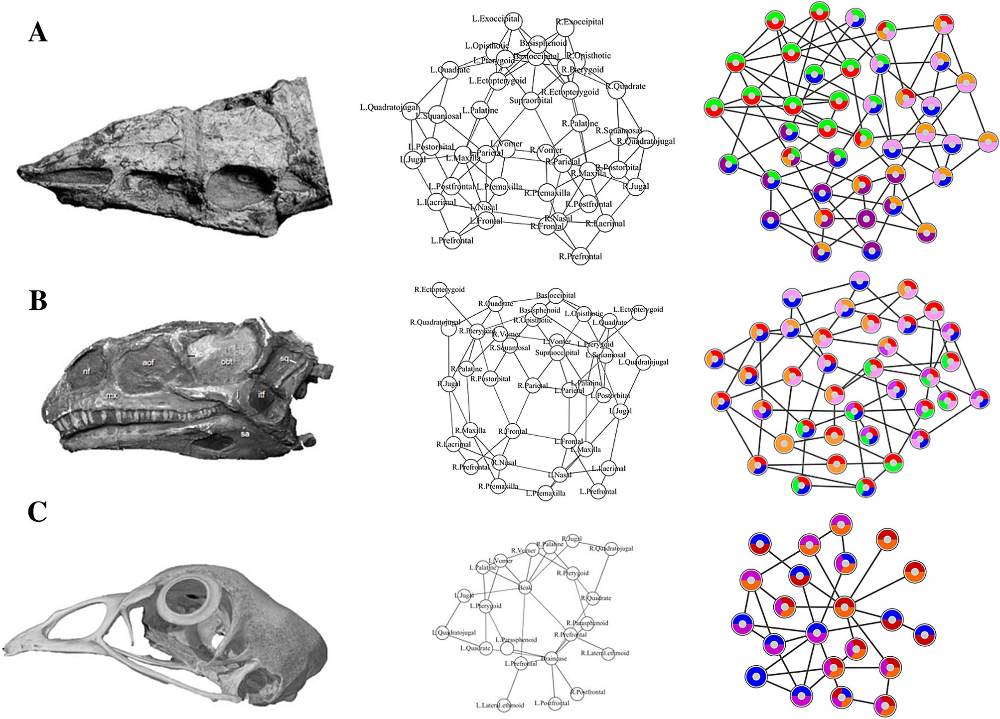
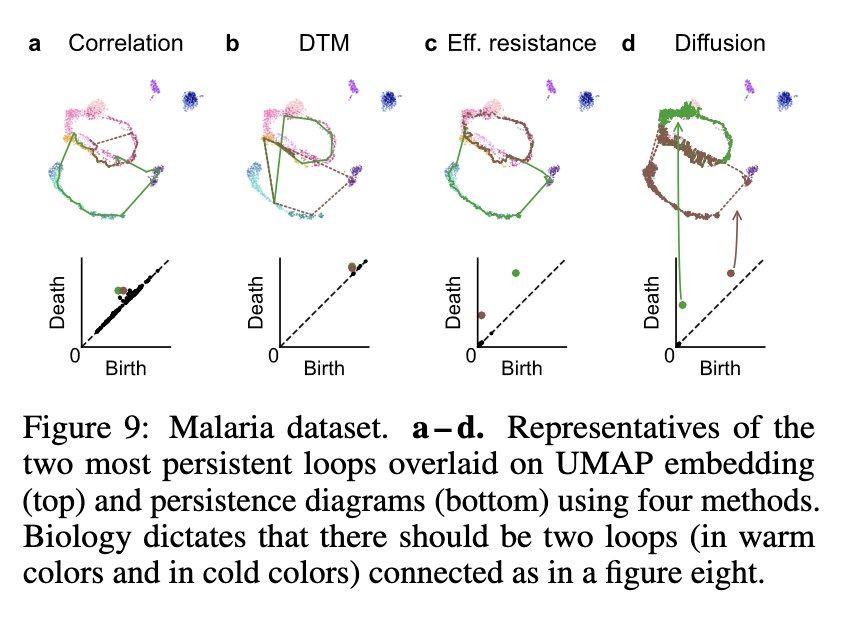
One of PH’s superpowers is its efficacy on graph structure. This has been especially effective in analyzing the attention signatures of language models, which can be represented as a graph of all the connections between words: tokens are the nodes, and attention weights (the softmaxed query–key scores) are the edges. This has worked especially well for detecting machine-generated text, and even for working out which model wrote it. Kushnareva et al. (Artificial Text Detection via Examining the Topology of Attention Maps, 2021) turned BERT’s attention maps into graphs and used their topological features to tell human text from machine text. Tulchinskii et al. (Intrinsic Dimension Estimation for Robust Detection of AI-Generated Texts, 2023) went further with a quantity built from PH, the “persistent homology dimension” of a text’s token embeddings: human text comes out consistently higher-dimensional than generated text. And Uchendu et al.’s TopFormer (2023) adds topological features to a transformer classifier to attribute deepfake text to the model that generated it.
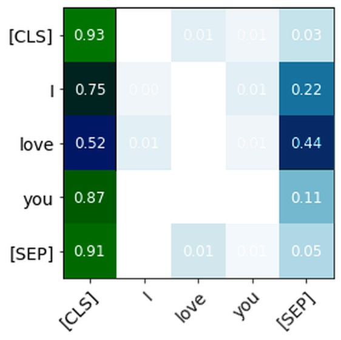
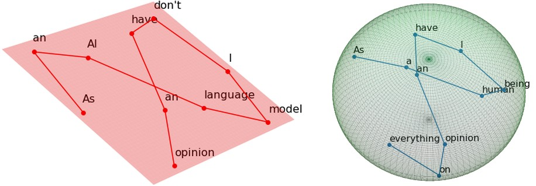
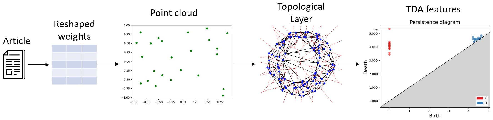
One of my favorite works in applied topology is this 2024 paper by Draganov & Skiena (The Shape of Word Embeddings), which rebuilds the family tree of 81 Indo-European languages from nothing but the shape of their static word embeddings. The trees aren’t perfect, but they are significantly closer to the real one than chance. It makes me weep tears of beauty every time I read it. It’s The Godfather of the applied-math-meets-linguistics niche.
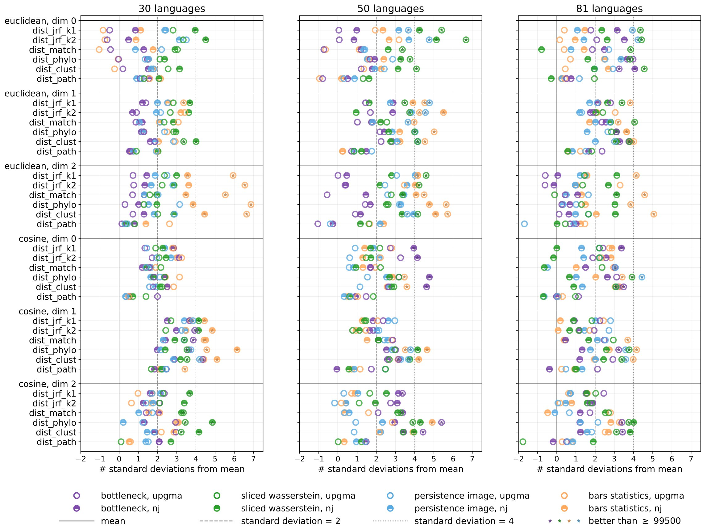
Like I said, one thing that PH is really good at is finding cycles. In language, not many processes generate cycles, except for those with a natural periodicity, like days of the week or months of the year. Goodfire’s The World Inside Neural Networks (2026) collects some of the shapes interpretability researchers have found inside models: days of the week and months sit on circular loops, years in history on smooth curves, and colors on surfaces organized by hue, saturation and lightness.
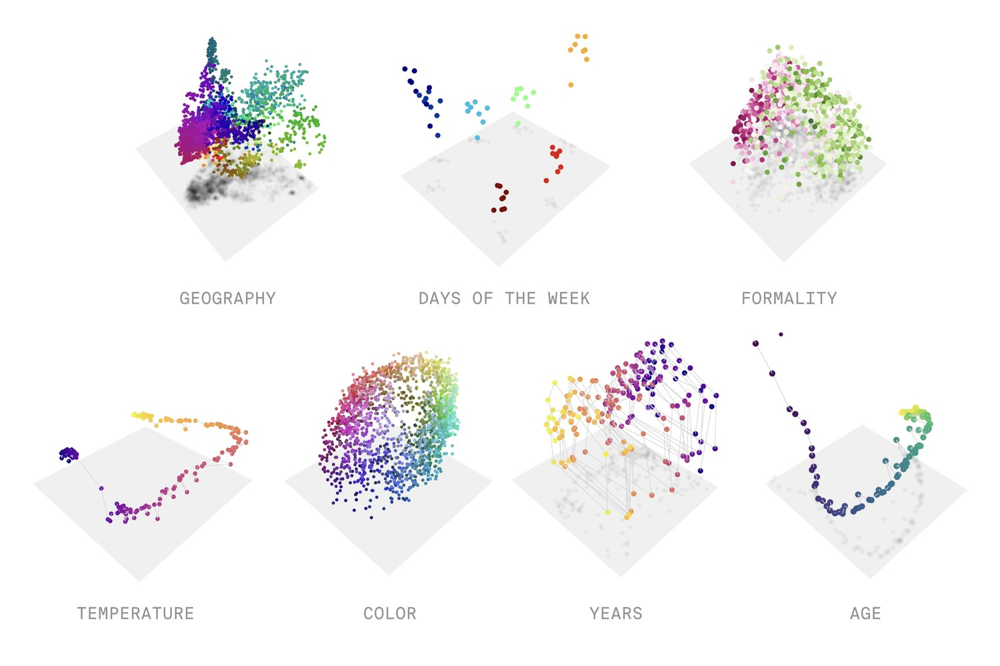
Numbers are even stranger. Kantamneni and Tegmark (Language Models Use Trigonometry to Do Addition, 2025) found that language models represent numbers on a helix: a straight line for size, wrapped in circles with periods of 2, 5, 10 and 100 (loops!). To add two numbers, the model rotates around those circles, which is where the trigonometry in the title comes from. Neither of these used PH.
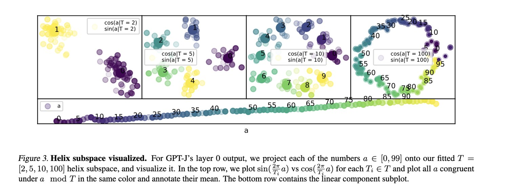
But it’s important to note that the helix lives in a small subspace (a handful of dimensions out of thousands) that the authors fit specifically to find it. I suspect that pointing the PH bazooka at the whole embedding cloud would not give the same kind of result.
Your first hit
Most data analysis is about what’s there. Topology is about how it’s arranged, including the parts that are missing. Persistent homology won’t find structure that doesn’t exist, and it’s easy to over-read what it does find. But used carefully, with a hypothesis and a baseline, it gives you something rare: a way to check whether the shape of your data is the shape of the world. Sometimes it is. Sometimes it isn’t. Either way, you learned something.
Consider this your first hit. Don’t worry, it’s not meth, it’s just math.
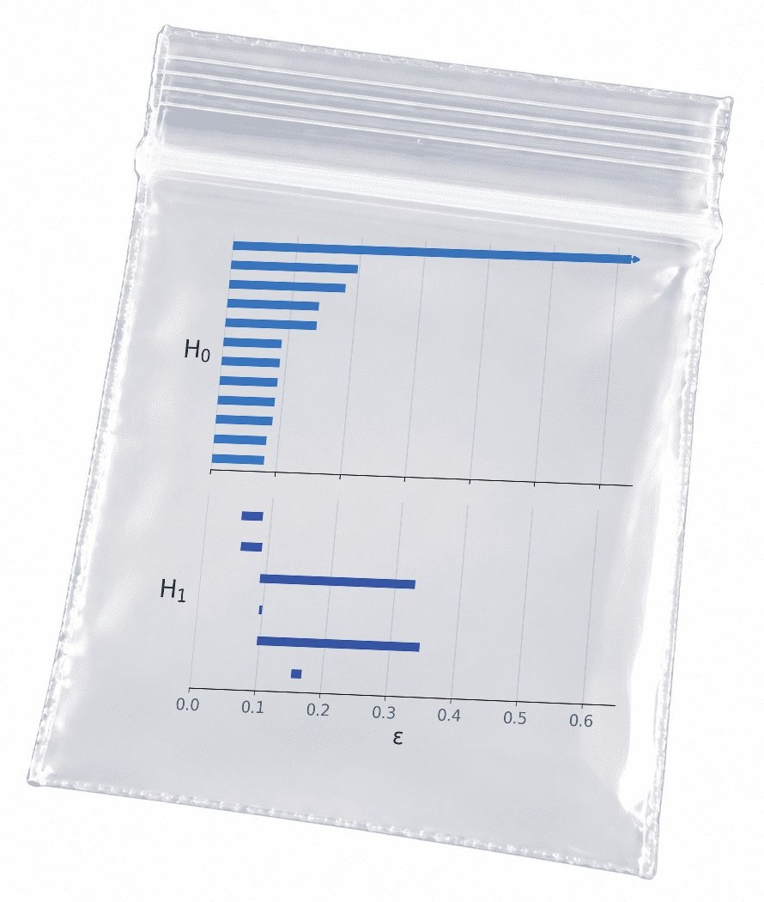
Resources
Below are some tools I use for computing PH on model internals. I maintain forks of many of these (in the links provided), because many TDA tools are not made for language models, and they need a little bit of tinkering to be applicable to studying LLMs. I also turn research code into reusable, abstracted APIs, and add some expanded data visualization for my own purposes.
- eff-ph: effective PH pipelines; evaluated on toy examples and biological data with ground truth.
- HOLE: visualising the topology of neural nets in H0; originally evaluated on image-classification networks.
- PH on attention maps: persistent homology applied to transformer attention maps.
- Artificial Text Detection via Examining the Topology of Attention Maps: Kushnareva et al.’s paper, the starting point for most attention-map topology.
For a broad introduction to TDA for NLP, start with Adaku Uchendu and Thai Le’s survey, Unveiling Topological Structures from Language: A Comprehensive Survey of Topological Data Analysis Applications in NLP, and her companion list, AwesomeTDA4NLP.
And for the mathematics itself, I really enjoy Pierre Albin’s course on YouTube, or basically any of the Applied Algebraic Topology Network’s videos. Robert Ghrist’s essay Barcodes: the persistent topology of data said basically everything I said here more coherently and with fewer memes.